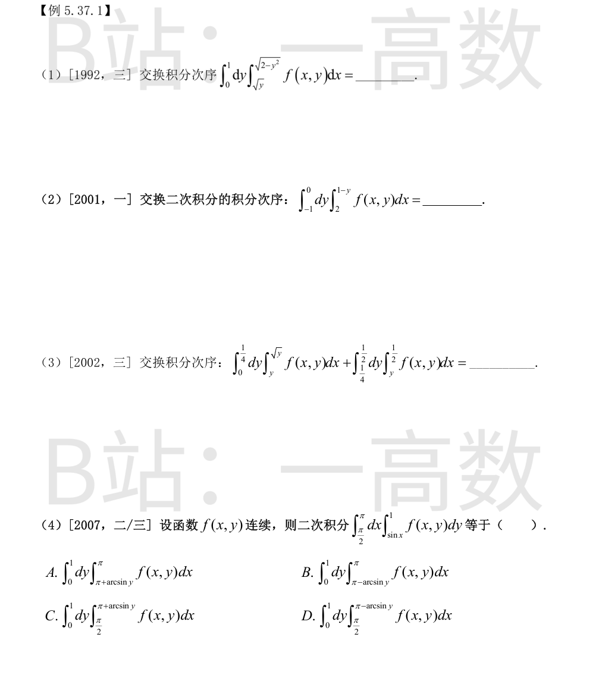
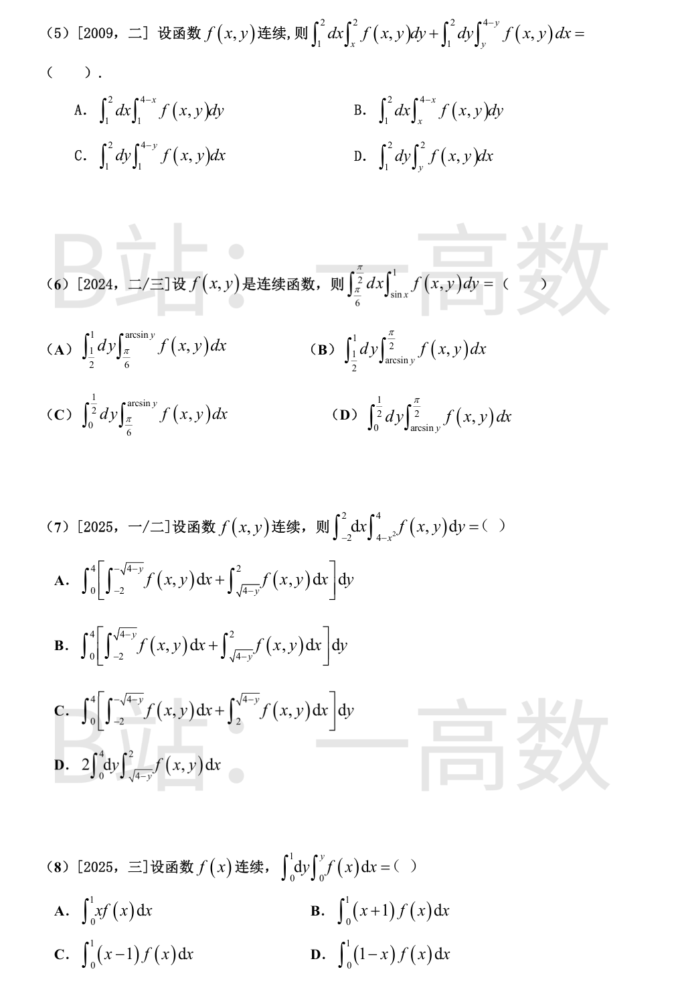
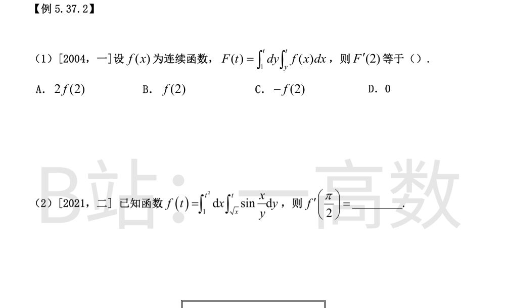
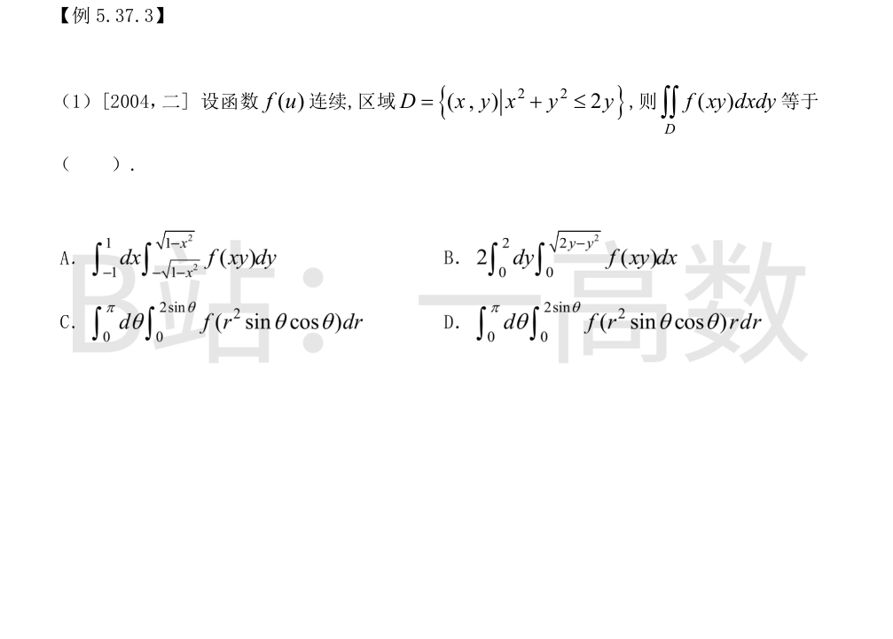
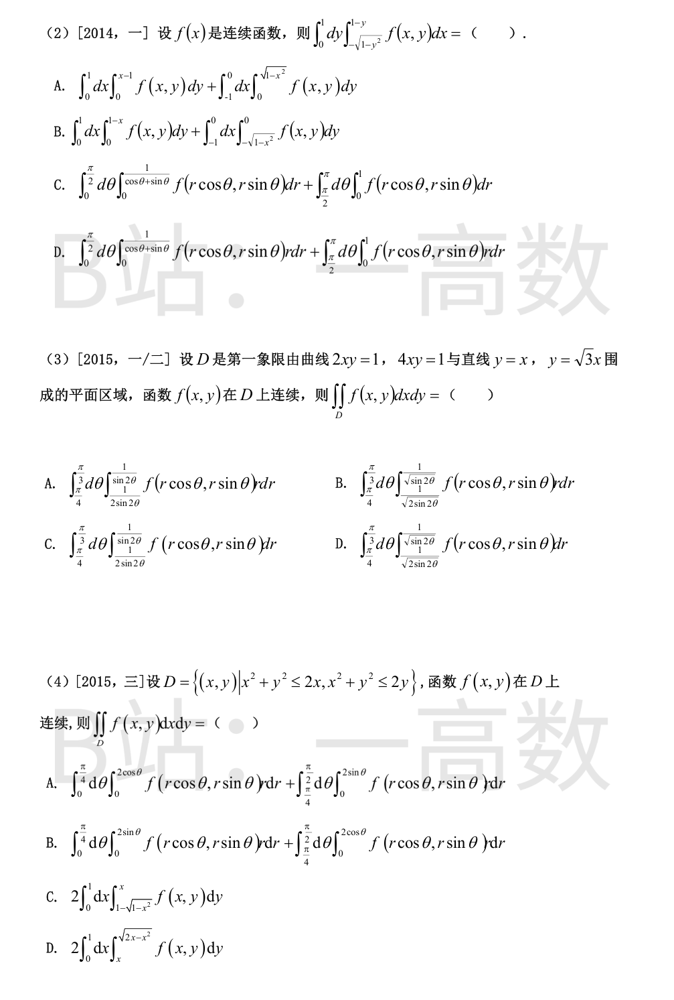
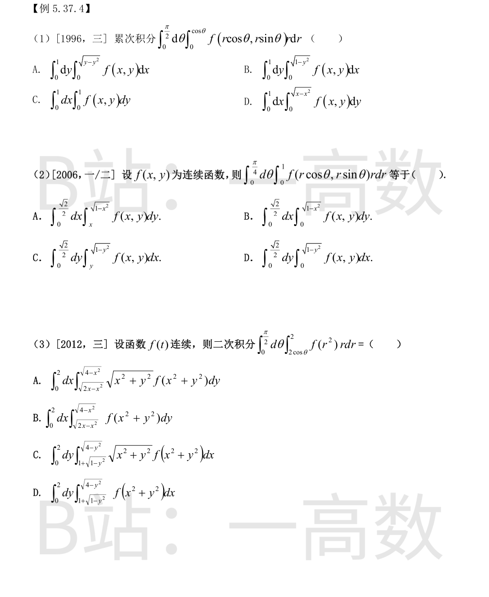

区域 $D:\ 0\le y\le1,\ \sqrt y\le x\le\sqrt{2-y^{2}}$，左界 $x=\sqrt y$ 即 $y=x^{2}$（抛物线），右界 $x=\sqrt{2-y^{2}}$ 即 $x^{2}+y^{2}=2$（圆弧，第一象限）。
联立 $y=x^{2}$ 与 $x^{2}+y^{2}=2$：$y+y^{2}=2\Rightarrow y=1$，交点 $(1,1)$。
按 $x$ 划分：$x\in[0,1]$ 时 $y$ 从 $0$ 到 $x^{2}$（在抛物线左侧、抛物线为其上界）；$x\in[1,\sqrt2]$ 时 $y$ 从 $0$ 到 $\sqrt{2-x^{2}}$（圆弧为上界）。故
$$\int_{0}^{1}dx\int_{0}^{x^{2}}f\,dy+\int_{1}^{\sqrt{2}}dx\int_{0}^{\sqrt{2-x^{2}}}f\,dy$$
$y\in[-1,0]$ 时 $1-y\in[1,2]\le 2$，内层积分上下限倒置：
$$\int_{-1}^{0}dy\int_{2}^{1-y}f\,dx=-\iint_{R}f\,dA,\qquad R=\{-1\le y\le0,\ 1-y\le x\le2\}$$
把 $R$ 按 $x$ 改写：$x\ge 1-y\Leftrightarrow y\ge 1-x$，且 $-1\le y\le0$。
- $x\in[1,2]$：$1-x\in[-1,0]$，$y$ 从 $1-x$ 到 $0$；
- $x\in[2,3]$：$1-x\le-1$，$y$ 从 $-1$ 到 $0$。
故
$$\int_{-1}^{0}dy\int_{2}^{1-y}f\,dx=-\int_{1}^{2}dx\int_{1-x}^{0}f\,dy-\int_{2}^{3}dx\int_{-1}^{0}f\,dy=\int_{1}^{2}dx\int_{0}^{1-x}f\,dy+\int_{2}^{3}dx\int_{-1}^{0}f\,dy$$
第一块 $D_1=\{0\le y\le\tfrac14,\ y\le x\le\sqrt y\}$：即 $y\le x$ 且 $x^{2}\le y$，改写为 $\{0\le x\le\tfrac12,\ x^{2}\le y\le x\}$。
第二块 $D_2=\{\tfrac14\le y\le\tfrac12,\ y\le x\le\tfrac12\}$：即 $\{\tfrac14\le x\le\tfrac12,\ \tfrac14\le y\le x\}$。
当 $x\in[\tfrac14,\tfrac12]$ 时 $x^{2}\le\tfrac14\le y$，故 $D_2\subseteq D_1$ 的 $y$-范围 $[x^{2},x]$ 之内并集仍为 $\{x^{2}\le y\le x\}$。
两块拼成 $D=\{0\le x\le\tfrac12,\ x^{2}\le y\le x\}$，故
$$\int_{0}^{1/2}dx\int_{x^{2}}^{x}f(x,y)\,dy$$
区域 $D:\ \dfrac{\pi}{2}\le x\le\pi,\ \sin x\le y\le1$（$\sin x$ 在该区间由 1 递减到 0）。
固定 $y\in[0,1]$：$\sin x\le y$ 在 $[\tfrac{\pi}{2},\pi]$ 上（$\sin$ 递减）等价于 $x\ge \pi-\arcsin y$（因 $\sin(\pi-\arcsin y)=y$）。故 $D=\{0\le y\le1,\ \pi-\arcsin y\le x\le\pi\}$，
$$\int_{0}^{1}dy\int_{\pi-\arcsin y}^{\pi}f(x,y)\,dx$$
选 B。
第一块 $A=\{1\le x\le2,\ x\le y\le2\}$（三角形 $(1,1),(2,2),(1,2)$）；第二块 $B=\{1\le y\le2,\ y\le x\le4-y\}$（三角形 $(1,1),(3,1),(2,2)$）。
按 $y$ 固定（$1\le y\le2$）：$A$ 给出 $x\le y$ 即 $1\le x\le y$；$B$ 给出 $y\le x\le4-y$。两者拼接：$x$ 从 $1$ 到 $4-y$（在 $x=y$ 处相接）。
故并集 $=\{1\le y\le2,\ 1\le x\le4-y\}$，
$$\int_{1}^{2}dy\int_{1}^{4-y}f(x,y)\,dx$$
选 C。
区域 $D:\ \dfrac{\pi}{6}\le x\le\dfrac{\pi}{2},\ \sin x\le y\le1$。$\sin x$ 在 $[\tfrac{\pi}{6},\tfrac{\pi}{2}]$ 上递增。
固定 $y\in[0,1]$：$\sin x\le y\Leftrightarrow x\le\arcsin y$，结合 $x\ge\tfrac{\pi}{6}$ 需 $\arcsin y\ge\tfrac{\pi}{6}$，即 $y\ge\tfrac12$。
故 $D=\{\tfrac12\le y\le1,\ \tfrac{\pi}{6}\le x\le\arcsin y\}$，
$$\int_{1/2}^{1}dy\int_{\pi/6}^{\arcsin y}f(x,y)\,dx$$
选 A。
区域 $D:\ -2\le x\le2,\ 4-x^{2}\le y\le4$（抛物线 $y=4-x^{2}$ 与直线 $y=4$ 之间）。
固定 $y\in[0,4]$：$4-x^{2}\le y\Leftrightarrow x^{2}\ge4-y\Leftrightarrow|x|\ge\sqrt{4-y}$，结合 $|x|\le2$ 得两块：$x\in[-2,-\sqrt{4-y}]$ 与 $x\in[\sqrt{4-y},2]$。
故
$$\int_{0}^{4}\left[\int_{-2}^{-\sqrt{4-y}}f(x,y)\,dx+\int_{\sqrt{4-y}}^{2}f(x,y)\,dx\right]dy$$
选 A（B 的第一段上限、C 的第二段下限均越过了对称轴，D 的系数 2 错误——两块宽度不等不能用对称倍乘）。
区域 $D=\{0\le y\le1,\ 0\le x\le y\}$，改为先对 $y$：$x\in[0,1]$，$y$ 从 $x$ 到 $1$：
$$\int_{0}^{1}f(x)\,dx\int_{x}^{1}dy=\int_{0}^{1}(1-x)f(x)\,dx$$
选 D。

交换次序：区域 $\{1\le y\le t,\ y\le x\le t\}=\{1\le x\le t,\ 1\le y\le x\}$，故
$$F(t)=\int_{1}^{t}f(x)\,dx\int_{1}^{x}dy=\int_{1}^{t}(x-1)f(x)\,dx$$
由变限积分求导，$F'(t)=(t-1)f(t)$，故 $F'(2)=f(2)$，选 B。
被积函数对 $y$ 无初等原函数，先交换次序。区域 $\{1\le x\le t^{2},\ \sqrt x\le y\le t\}$（设 $t>1$）：$y\in[1,t]$，由 $y\ge\sqrt x\Leftrightarrow x\le y^{2}$ 得 $x\in[1,y^{2}]$：
$$f(t)=\int_{1}^{t}dy\int_{1}^{y^{2}}\sin\frac{x}{y}\,dx=\int_{1}^{t}y\left(\cos\frac{1}{y}-\cos y\right)dy$$
（内层：$\int_1^{y^2}\sin\frac{x}{y}dx=\left[-y\cos\frac{x}{y}\right]_1^{y^2}=y\cos\frac1y-y\cos y$。）
由变限求导 $f'(t)=t\left(\cos\dfrac{1}{t}-\cos t\right)$，代入 $t=\dfrac{\pi}{2}$（$\cos\dfrac{\pi}{2}=0$）：
$$f'\left(\frac{\pi}{2}\right)=\frac{\pi}{2}\left(\cos\frac{2}{\pi}-1\right)$$


$x^{2}+y^{2}\le2y$ 为圆心 $(0,1)$、半径 1 的圆盘。极坐标下 $x=r\cos\theta,\ y=r\sin\theta$：
$$r^{2}\le2r\sin\theta\Leftrightarrow r\le2\sin\theta,\quad\theta\in[0,\pi]$$
且 $xy=r^{2}\sin\theta\cos\theta$，面积元为 $r\,dr\,d\theta$。故
$$\iint_{D}f(xy)\,dxdy=\int_{0}^{\pi}d\theta\int_{0}^{2\sin\theta}f\left(r^{2}\sin\theta\cos\theta\right)r\,dr$$
选 D。（A 是原点处单位圆盘，区域错；B 把右半盘乘 2，但 $xy$ 关于 $x$ 是奇的，无此对称性；C 丢了雅可比因子 $r$。）
区域 $D=\{0\le y\le1,\ -\sqrt{1-y^{2}}\le x\le1-y\}$：左界为上半单位圆 $x^{2}+y^{2}=1\ (x\le0)$，右界为直线 $x+y=1$。
按 $x$ 分两块：$x\in[0,1]$ 时条件 $x\le1-y\Leftrightarrow y\le1-x$，得三角形 $\{0\le y\le1-x\}$；$x\in[-1,0]$ 时条件 $x\ge-\sqrt{1-y^{2}}\Leftrightarrow x^{2}+y^{2}\le1$，得 $\{0\le y\le\sqrt{1-x^{2}\}}$（左上四分之一圆盘）。
极坐标：三角形部分为 $\theta\in[0,\tfrac{\pi}{2}]$，$r\le\dfrac{1}{\cos\theta+\sin\theta}$（即 $r\cos\theta+r\sin\theta\le1$）；四分之一圆盘为 $\theta\in[\tfrac{\pi}{2},\pi]$，$r\le1$。故
$$\int_{0}^{\frac{\pi}{2}}d\theta\int_{0}^{\frac{1}{\cos\theta+\sin\theta}}f\left(r\cos\theta,r\sin\theta\right)r\,dr+\int_{\frac{\pi}{2}}^{\pi}d\theta\int_{0}^{1}f\left(r\cos\theta,r\sin\theta\right)r\,dr$$
选 D。（A、B 直角坐标分块上下限错；C 漏了雅可比因子 $r$。）
极坐标下 $xy=r^{2}\sin\theta\cos\theta=\dfrac{r^{2}}{2}\sin2\theta$。
两条双曲线：$4xy=1\Leftrightarrow r^{2}=\dfrac{1}{2\sin2\theta}$；$2xy=1\Leftrightarrow r^{2}=\dfrac{1}{\sin2\theta}$，故 $r$ 介于 $\dfrac{1}{\sqrt{2\sin2\theta}}$ 与 $\dfrac{1}{\sqrt{\sin2\theta}}$ 之间。
两条直线：$y=x\Rightarrow\theta=\tfrac{\pi}{4}$；$y=\sqrt3x\Rightarrow\tan\theta=\sqrt3\Rightarrow\theta=\tfrac{\pi}{3}$。
故
$$\iint_{D}f\,dxdy=\int_{\frac{\pi}{4}}^{\frac{\pi}{3}}d\theta\int_{\frac{1}{\sqrt{2\sin2\theta}}}^{\frac{1}{\sqrt{\sin2\theta}}}f\left(r\cos\theta,r\sin\theta\right)r\,dr$$
选 D。（A、C 未对 $r^{2}$ 开方；B、A 缺少雅可比因子 $r$。）
$D$ 是圆 $(x-1)^{2}+y^{2}\le1$ 与 $x^{2}+(y-1)^{2}\le1$ 的交（透镜形，位于第一象限，顶点 $(0,0)$ 与 $(1,1)$）。
极坐标：$r\le2\cos\theta$ 且 $r\le2\sin\theta$，$\theta\in[0,\tfrac{\pi}{2}]$，取小者：
- $\theta\in[0,\tfrac{\pi}{4}]$：$\sin\theta\le\cos\theta$，$r\le2\sin\theta$；
- $\theta\in[\tfrac{\pi}{4},\tfrac{\pi}{2}]$：$\cos\theta\le\sin\theta$，$r\le2\cos\theta$。
故
$$\int_{0}^{\frac{\pi}{4}}d\theta\int_{0}^{2\sin\theta}f\left(r\cos\theta,r\sin\theta\right)r\,dr+\int_{\frac{\pi}{4}}^{\frac{\pi}{2}}d\theta\int_{0}^{2\cos\theta}f\left(r\cos\theta,r\sin\theta\right)r\,dr$$
选 B。注意 C、D（$2\int_0^1dx\int_{1-\sqrt{1-x^{2}}}^{x}$ 与 $2\int_0^1dx\int_x^{\sqrt{2x-x^{2}}}$）各是按 $y=x$ 截出的半域乘 2：只有当 $f(x,y)=f(y,x)$ 时才等于全域积分，对一般连续 $f$ 不成立，故不对。

区域：$0\le\theta\le\tfrac{\pi}{2},\ 0\le r\le\cos\theta$，即 $r\le\cos\theta\Leftrightarrow x^{2}+y^{2}\le x$（圆心 $(\tfrac12,0)$、半径 $\tfrac12$ 的圆盘）与 $y\ge0$ 之交：上半圆盘。
直角坐标：$0\le x\le1,\ 0\le y\le\sqrt{x-x^{2}}$，故
$$\int_{0}^{1}dx\int_{0}^{\sqrt{x-x^{2}}}f(x,y)\,dy$$
选 D。（A 是上半圆盘但按 $y$ 外层时圆方程应为 $y=\sqrt{y-y^{2}}$ 的混淆形式；B 的 $\sqrt{1-y^{2}}$ 是单位圆；C 是正方形，区域均错。）
区域：单位扇形 $\{0\le\theta\le\tfrac{\pi}{4},\ 0\le r\le1\}=\{x^{2}+y^{2}\le1,\ 0\le y\le x\}$。
按 $y$ 外层：$0\le y\le\dfrac{\sqrt2}{2}$（圆与直线 $y=x$ 交点纵坐标 $\sin\tfrac{\pi}{4}$），$x$ 从直线 $x=y$ 到圆 $x=\sqrt{1-y^{2}}$：
$$\int_{0}^{\frac{\sqrt2}{2}}dy\int_{y}^{\sqrt{1-y^{2}}}f(x,y)\,dx$$
选 C。（A 是 $y\ge x$ 侧扇形，区域错；B、D 是含 $y\le x$ 与 $y\ge x$ 的整块，均超过扇形。）
区域：$0\le\theta\le\tfrac{\pi}{2}$，$2\cos\theta\le r\le2$：即第一象限内、半径 2 的圆盘 $x^{2}+y^{2}\le4$ 之内、圆 $r=2\cos\theta$（即 $x^{2}+y^{2}=2x$）之外的部分。
按 $x$ 固定（$0\le x\le2$）：$r\ge2\cos\theta\Leftrightarrow x^{2}+y^{2}\ge2x\Leftrightarrow y\ge\sqrt{2x-x^{2}}$（$y\ge0$），上界 $y\le\sqrt{4-x^{2}}$，且 $\sqrt{2x-x^{2}}\le\sqrt{4-x^{2}}\Leftrightarrow x\le2$ 恒成立。故
$$\int_{0}^{2}dx\int_{\sqrt{2x-x^{2}}}^{\sqrt{4-x^{2}}}f\left(x^{2}+y^{2}\right)dy$$
选 B。（A 多乘了 $\sqrt{x^{2}+y^{2}}$；C 同样多了因子；D 按 $y$ 外层只写了 $x\ge1+\sqrt{1-y^{2}}$ 那一块，漏掉 $x\le1-\sqrt{1-y^{2}}$ 靠近 $y$ 轴的一块。）